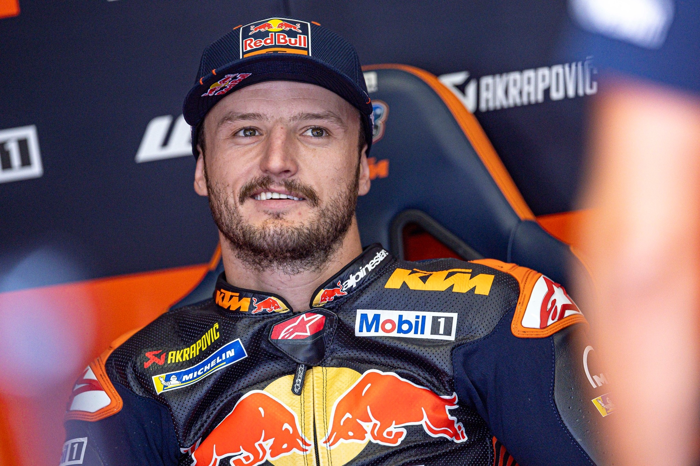

Jack Miller
Jack Peter Miller (Townsville, Australia, 18 de enero de 1995) es un piloto de motociclismo australiano, que corre actualmente en MotoGP en el equipo Prima Pramac Racing con una Yamaha YZR-M1.

Datos interesantes
- Nombre: Jack Peter Miller
- Lugar de Nacimiento: Townsville, Australia
- Altura: 1,73 m
- Peso: 64 kg
- Moto: Yamaha
- Dorsal: 43
Recorrido
- RZT Racing (Temporada: 2011, Moto: Aprilia)
- Caretta Technology (Temporada: 2011, Moto: KTM), (Temporada: 2012, Moto: Honda), (Temporada: 2013, Moto: FTR Honda)
- Red Bull KTM Ajo (Temporada: 2014, Moto: KTM)
- CWM LCR Honda (Temporada: 2015, Moto: Honda)
- EG 0,0 Marc VDS (Temporada: 2016, Moto: Honda), (Temporada: 2017, Moto: Honda)
- Alma Pramac Racing (Temporada: 2018, Moto: Ducati), (Temporada: 2019, Moto: Ducati)
- Pramac Racing (Temporada: 2020, Moto: Ducati)
- Ducati Lenovo Team (Temporada: 2021, Moto: Ducati), (Temporada: 2022, Moto: Ducati)
- Red Bull KTM Factory Racing (Temporada: 2023, Moto: KTM), (Temporada: 2024, Moto: KTM)
- Prima Pramac Yamaha (Temporada: 2025, Moto: Yamaha)
Conceptos
| Puntos | Posición | Poles | Victorias | Podios |
|---|---|---|---|---|
| 87 | 14 | 0 | 0 | 0 |
Información de interés
Info: Información Más información
Descripcción
Jack Miller debutó en carreras de ruta en 2009, tras comenzar su carrera en tierra, y poco después debutó en el Campeonato Mundial de 125. Al alzarse con el título de 125 IDM en su camino hacia la competición a tiempo completo a nivel mundial, Miller impresionó por primera vez en 2013, cuando demostró ser un piloto líder constante con Racing Team Germany. En 2014, Miller se quedó a las puertas del título con Red Bull KTM Ajo, perdiendo por poco ante Álex Márquez, antes de dar el increíble salto de Moto3™ a MotoGP™ en 2015.